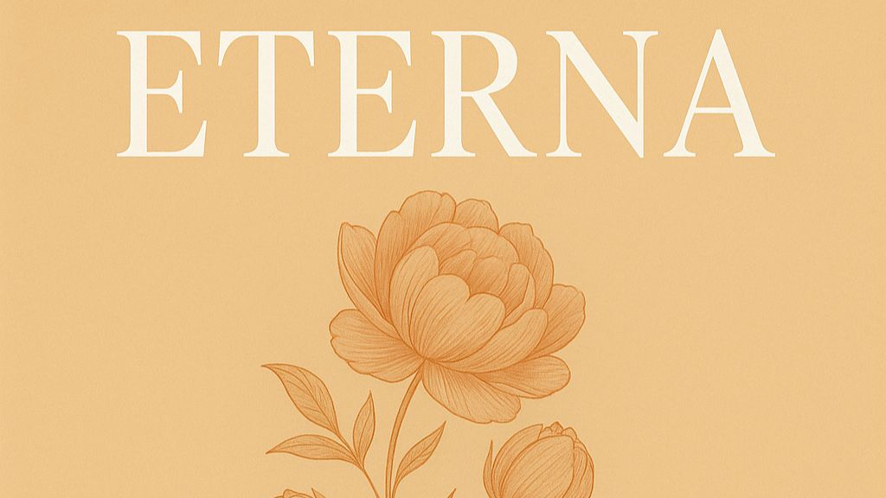

Vanessa Marie King Finds Forever in Her Debut Album Eterna

The following feature is now included in our online magazine which is also available in print.
Issue #4
Online Magazine | Print MagazineFor more details contact us at: volechomag@gmail.com
There’s a moment, about two minutes into the title track of Eterna, when Vanessa Marie King’s voice cracks ever so slightly, not from strain, but from truth. It’s the kind of moment that stops you mid, thought. You can hear that she’s not just performing the song, she’s living it. That’s the essence of Eterna, a debut record that feels both intimate and cinematic, a confession wrapped in melody.
Released on September 30, 2025, under her family label KINGBYDESIGN, Eterna isn’t just an introduction, it’s a declaration. Across its ten tracks, King delivers a deeply personal portrait of love, loss, and endurance. Each song feels like a diary entry, written not in ink but in rhythm and resonance.
Vanessa hails from Mission, United States, but her music feels borderless. There’s a universality to the emotions she captures, and her bilingual songwriting adds an even richer layer to the storytelling. Tracks like Jugaste con fuego (“You played with fire”) and Niña perdida (“Lost girl”) unfold like chapters in a memoir, vivid, vulnerable, and unflinchingly honest. The Spanish lyrics roll off her tongue with warmth and gravity, while her English verses reveal a poet’s sense of space and rhythm.
In Eterna, Vanessa doesn’t shy away from her scars. She folds them into melodies that ache and glow in equal measure. The album’s production leans into organic textures, acoustic guitars, soft percussion, and layered harmonies that breathe rather than shout. It’s reminiscent of the emotional clarity found in the works of Rosalía’s early Flamenco, inspired recordings or the introspective glow of Billie Eilish’s Happier Than Ever, but Vanessa’s tone is entirely her own. Her voice carries the grit of lived experience, paired with the elegance of someone who’s learned to stand still in the storm.
“Every song on Eterna comes from a real place,” Vanessa shared in a recent interview. “I wrote about people who changed me, moments that hurt, and lessons that kept finding me. Music helped me turn pain into peace.” That spirit runs through the entire record. Eterna doesn’t try to impress, it connects.
The album’s title track is its heartbeat. Eterna swells slowly, its melody circling around the idea of love that lingers beyond endings, love that lives in memory, in forgiveness, in letting go. It’s the kind of song that would fit perfectly at the end of a film like Blue Valentine or Before Sunset, a closing montage of quiet revelation.
Elsewhere, Jugaste con fuego burns brighter. It’s sharp, rhythmic, and unapologetic, a track that channels betrayal into strength, with Vanessa’s voice rising over a simmering groove. Niña perdida, on the other hand, pulls inward. It’s hauntingly simple, just piano, soft reverb, and the weight of introspection. The restraint makes it devastating.
Fans of Lana Del Rey, Natalia Lafourcade, or Adele’s 21, era ballads will find something familiar in Eterna, that mix of heartbreak and hope, vulnerability and defiance. Yet Vanessa’s storytelling feels distinctly modern. Her lyrics don’t wallow; they evolve. Even in her saddest moments, there’s movement, a sense that healing is already on its way.
It’s worth noting that Eterna arrives at a time when many debut records are overproduced or algorithm, friendly, designed for attention spans, not hearts. King goes the other way. She gives her songs time to breathe, letting emotion take the lead. The result feels timeless.
What also stands out is her independence. Releasing under KINGBYDESIGN, a family label, adds a layer of authenticity. You can feel that this wasn’t filtered through marketing departments or committee edits. It’s handcrafted, personal in every sense. That independence mirrors artists like Sabrina Claudio, Laufey, or Hozier, who build worlds that listeners enter willingly because they feel real.
Follow Our Playlist For More Music!
This dispatch was last updated on October 14, 2025